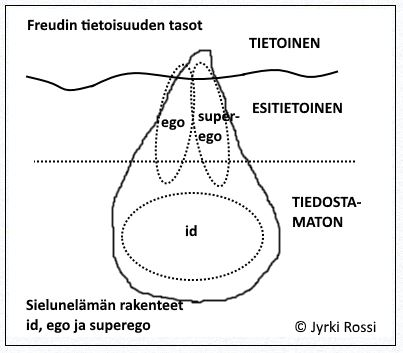
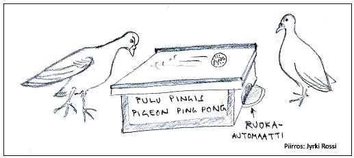
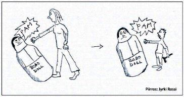
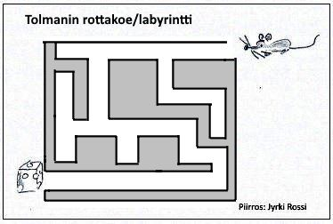
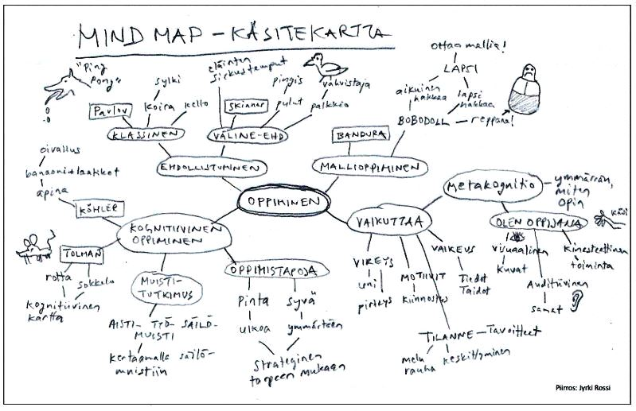

1. Johdatus psykologiaan
1.1 Mitä psykologia on?
1.2 Psykologian sovellusalat
1.3 Psykologian ihmiskäsitys
2. Psykologinen tutkimus ja tiedonhankinta
3. Katsaus psykologian historiaan ja eri suuntauksiin
3.1 Psykologiatieteen synty 1800-luvun lopulla
3.2 Behaviorismi
3.3 Psykoanalyysi eli psykodynaaminen suuntaus
3.4 Hahmopsykologia (eli Gestalt-psykologia)
3.5 Humanistinen psykologia
3.6 Kognitiivinen psykologia
3.7 Sosiokognitiivinen suuntaus
3.8 Neurotieteellinen suuntaus
4. Oppiminen
4.1 Mitä oppiminen on?
4.2 Tahaton oppiminen
4.3 Kognitiivinen oppiminen
4.4 Oppimiseen vaikuttavia tekijöitä
5. Sosiaalipsykologian perusteet
5.1 Ryhmät ja sosiaalinen kanssakäyminen
5.2 Valta ja johtajuus
5.3 Asenteet
5.4 Viestintä
1. JOHDATUS PSYKOLOGIAAN
1.1 Mitä psykologia on?
• Psykologia = (kr.) psykhe eli sielu, mieli ja logos eli oppi (sielutiede)
• Psykologia tutkii ihmisen tavoitteellista toimintaa. Miksi ihminen käyttäytyy tietyllä tavalla tietyissä tilanteissa?
• Yksilöihmisen (subjektiivisuus) toiminta tähtää johonkin päämäärään (teleologisuus). Tätä toimintaa pyritään ymmärtämään (hermeneuttisuus). > Ero luonnontieteisiin, joissa korostuu voimakkaammin objektiivisuus, kausaalisuus ja positivismi.
• Tavoitteellinen toiminta on ympäristöön sopeutumista.
• Psykologia on nuori tieteenala. Lähtökohtana saks. Wilhelm Wundtin perustama kokeellisen psykologian laboratorio v. 1879 Leipzigiin.
• Kuuluu empiirisiin eli kokemusperäisiin tieteisiin.
• Ihmisen toimintaa tarkastellaan solu- ja biokemialliselta tasolta aina kulttuuriympäristöä ja historiaa myöten.
• Psykologian osa-alueita ovat mm.:
1) Kehityspsykologia (PS2) - ihmisen elämänkaari kohdusta hautaan.
2) Sosiaalipsykologia (PS1) - ihmissuhteet, ryhmät, perhe, asenteet jne.
3) Kognitiivinen psykologia (PS3) - ajattelu, kieli, muisti, oppiminen.
4) Neuropsykologia tai biologinen psykologia (PS3) - hermosto, aivot, aivokuvantaminen, hormonit, välittäjäaineet.
5) Kliininen psykologia (PS5) - mielenterveystyö, ennaltaehkäisy, tuki, terapia, tutkimus, psykkiset sairaudet ja häiriöt.
6) Motivaatiopsykologia (PS4) - tunteet, motiivit, nälkä, seksuaalisuus, minäpystyvyys, tavoitteellisuus.
7) Persoonallisuuspsykologia (PS5) - luonne, temperamentti, persoonallisuus, minä, selitysteoriat.
1.2 Psykologian sovellusalat
• Kliininen psykologia tutkii psyykkisten häiriöiden syitä pyrkien ennaltaehkäisyyn ja korjaavaan toimintaan. Kliinistä psykologiaa harjoitetaan mielenterveystoimistoissa ja sairaaloissa (mm. psykoterapia). Suuri osa psykologeista työskentelee mielenterveystyön parissa joko terveydenhuoltoalalla, kouluissa tai työpaikoilla.
• Kasvatuspsykologia keskittyy kasvatuksen ja opetuksen ongelmiin, mm. oppimisvaikeuksien selvittämiseen (koulu- ja perheneuvontatyö). Ammatinvalintapsykologia auttaa sopivan opiskelupaikan tai ammatin löytämisessä.
• Työpsykologia tutkii henkilövalintoja, työtyytyväisyyttä, työn tuottavuutta ja työsuojelua. Organisaatiopsykologia selvittelee tuotanto-organisaation toimintaa, työtapoja, tuottavuutta, henkilösuhteita, johtajuutta ja viestintää.
• Ympäristöpsykologia keskittyy ympäristöjen viihtyvyyden ja tarkoituksenmukaisuuden suunnitteluun.
• Mediapsykologia pyrkii tehokkaaseen viestintään ja mainontaan, viihdeala, peliteollisuus jne.
• Liikennepsykologia pyrkii kehittämään liikenneturvallisuutta ja selvittämään tapaturmien syyt.
• Urheilupsykologia pyrkii tehostamaan urheilijan fyysistä suorituskykyä psykologian keinoin erityisesti kilpailuja ajatellen.
1.3 Psykologian ihmiskäsitys
• Ihminen on psyykkinen, fyysinen ja sosiaalinen kokonaisuus.
• Ihminen on perimän ja ympäristön muokkaama ainutkertainen yksilö eli persoonallisuus.
• Ihminen on tietoa käyttävä eläin (korostuu kognitiivinen puoli, niin tunteiden kuin motiivienkin toiminnassa).
• Psyykkinen olemus sisältää: tiedonkäsittelyn (havaitseminen, muisti, ajattelu, kieli), tunteet (eli emootiot) ja motiivit (toiminnan psyykkiset syyt).
• Sisäiset mallit eli SKEEMAT ovat yksilön muistissa oleva kokemusten, tietojen, taitojen ja toimintojen varasto, jota käytetään toiminnan ohjauksessa. (Skeema-käsitteen "loi" filosofi Immanuel Kant, mutta psykologian puolella sen otti varhain käyttöön lapsipsykologi Jean Piaget, kognitiivisen kehityksen tutkija).
• Skeemaan sisällytettään mm.:
a) skriptit eli toiminnan käsikirjoitukset (esim. autolla ajo, kouluruokailussa käyttäytyminen)
b) kognitiiviset kartat (tilasta ja paikasta, esim. koulun "pohjapiirrustus")
c) tietokokonaisuudet (esim. jostakin aiheesta, kuten biologia tai psykologia)
• Sisäiset mallit muokkautuvat havaintokehässä (Ulric Neisser): Kohde (tieto ympäristöstä) > muuttaa > Sisäistä mallia > joka suuntaa > Tiedon etsintää > jonka perusteella tietoa valitaan > Kohteesta eli ympäristöstä (esimerkkinä: koripallo-ottelun sääntöjen oppiminen peliä seurattaessa).
• Maailmankuva = millainen maailma on, miten se toimii ja miten siinä tulee toimia (ns. laaja sisäinen malli)
• Ihmiskäsitys = millainen ihminen on, miten hän toimii ja miten toisiin ihmisiin tulee suhtautua. Ihmiskäsitys muotoutuu kulttuurin ja yhteiskunnan mukaan sekä oppimisen, kasvatuksen, ihmissuhteiden ja kokemusten vaikutuksesta.
• Minäkäsitys = millainen minä olen? Perusta luodaan jo lapsuudessa (perusturvallisuuden synty).
• Itsetunto = tunneperäinen käsitys itsestä ja omasta arvosta.
• Ihmisen pyrkimyksenä on 1) tuntea elämä ja toiminta mielekkäänä (mielihyväperiaate) ja 2) kokea hallitsevansa elämänsä eri tilanteita.
• Psyykkinen itsesäätely pyrkii pitämään yllä psyykkistä tasapainoa (ks. PS4 luku 1.4 ja PS5 luku 3.1):
1) coping eli tilanteenhallintakeinot (tietoista ongelmanratkaisua, keskustelu, järkeily jne.)
2) defenssit eli puolustusmekanismit (tiedostamattomia, kuten torjunta, arvon kieltäminen, selittely jne.)
2. PSYKOLOGINEN TUTKIMUS JA TIEDONHANKINTA
• Psykologisessa tutkimuksessa pyritään kuvailemaan ihmisen käyttäytymistä ja psyykkistä toimintaa sekä niiden välistä suhdetta.
• Tutkimuksessa pyritään:
- suunnitelmallisuuteen (mm. koeasetelmissa, jotta saataisiin tarkka tulos, vrt. Milgramin sähköshokkikoe)
- systemaattisuuteen (tietoa kerätään järjestelmällisesti, ei sattumanvaraisesti)
- luotettavuuteen: 1) reliabiliteetti=pysyvyys eli mittaus on virheetön, kyselyt tai mittarit antavat vastaavat tulokset, kun mittaus toistetaan, ja 2) validiteetti=pätevyys, testi mittaa sitä, mitä se on tarkoitettukin mittaamaan, tulokset siis vastaavat käytäntöä.
- objektiivisuuteen (vältetään tutkijan subjektiivisuuden vaikutus tuloksiin esim. tutkijan omat näkemykset tai teoriasuunta ei saa vaikuttaa lopputulokseen)
- toistettavuuteen (kuka tahansa voi toistaa tutkimuksen ja saada vastaavat tulokset)
- yleistettävyyteen (otos eli tutkittava joukko on edustava)
- raportoitavuuteen (tulokset ovat julkisia, jotta niitä voidaan tarkastella tiedeyhteisössä)
• tutkimuksen muuttuja = mitattava ilmiö (esim. älykkyys, ujous)
• operationalisointi = toimenpiteet, joilla tutkimuksen muuttujat pyritään ilmaisemaan mitattavassa muodossa (esim. Miten voisit mitata ujoutta tai johtamistaitoa? Ujoutta ei voi mitata esim. punastumisesta esiintymistilaisuudessa, vaan on luotava mittari esim. kysely, jonka kysymykset liittyvät ujouteen ja sosiaalisuuteen)
• Kvantitatiivinen eli määrällinen tutkimus hyödyntää tilastomatematiikkaa. Siinä pyritään kuvailemaan (deskriptiivinen tutkimus) esimerkiksi kuinka moni lukiolainen kärsii keskivaikeasta tai vaikeasta masennuksesta (vrt. Stakesin kouluterveyskyselyt). Kvalitatiivinen eli laadullinen tutkimus pyrkii syvempään tulkintaan ilmiöstä, selvittämään esimerkiksi syitä lukiolaisten masennukseen (sekä deskriptiivistä tutkimusta, mutta mahdollisesti myös ns. normatiivista tutkimusta, jolloin pyritään ehkäisemään nuorten masennusta).
• Tiedonhankintaan käytetään erilaisia tutkimusmenetelmiä (= systemaattinen keino, jolla tutkija saa tietoa tutkittavasta ilmiöstä).
• Tutkimusmenetelmän avulla tutkija pyrkii ratkaisemaan tutkimusongelman käyttäen jotakin tutkimusotetta ja tiettyjä tiedonkeruutapoja.
• Tutkimusotteita ovat:
1. Kokeellinen tutkimus
- ilmiöitä selvitetään yksinkertaistetuissa olosuhteissa tarkan tutkimussuunnitelman puitteissa, jossa häiriötekijät on pyritty poistamaan tarkoin (laboratoriotutkimuksessa tai luonnollisessa kontrolloidussa tilanteessa vrt. Zimbardon toteuttama vankilakoe, Schachterin ja Singerin adrenaliinikoe ks. PS4 luku 2.2)
- pyritään selvittämään kahden muuttujan välinen yhteys (syy-seuraus -suhde, aiheuttaako muuttuja x, tapahtuman y)
2. Korrelatiivinen tutkimus
- nykyisin erittäin yleinen tutkimusote ihmistieteissä
- selvitetään muuttujien välisiä riippuvuussuhteita matemaattisin, tilastollisin menetelmin
- selvitetään asioiden tilastollista esiintymisyhteyttä (onko x:llä ja y:llä jokin yhteys toisiinsa?)
- korreloiko esim. opiskelijan tunneilta poissaolot koulumenestykseen?
- positiivinen korrelaatio = x:n kasvaessa y:kin kasvaa esim. usein pituus ja paino korreloivat keskenään positiivisesti, mitä pitempi sen painavampi.
- negatiivinen korrelaatio = x:n kasvaessa y pienenee esim. tunneilta poissaolo ja kouluarvosanat: mitä enemmän poissa tunneilta, sitä paremmat kouluarvosanat (ei siis toteudu, vaan muodostuu negatiivinen korrelaatio).
- korrelaatio ilmaistaan pistearvoilla 0.0-1.0, jolloin voimakas korrelaatio on muuttujilla, kun korrelaatio on sama tai enemmän kuin 0.8, huomattava 0.6-0.8, kohtalainen 0.3-0.6 ja merkityksetön (ts. ei korrelaatiota), jos alle 0.3. (Katso halutessasi aiheesta enemmän tilastomatematiikan kurssikirjoista)

3. Kuvaileva tutkimus
- pyrkii tutkimuskohteen tarkkaan kuvailemiseen ja ymmärtämiseen
- useimmiten kvantitatiivista (myös kvalitatiivista)
- kuvaillaan, miten asiat ovat: esim. ilmiön tai tapahtuman yleisyys, kehitys, tunnusomaiset piirteet jne.
- esim. kuinka suuri prosenttiosuus Suomen lukiolaistytöistä kärsii vaikeasta masennuksesta, toisaalta voidaan selvittää mistä tämä masennus voi johtua?
4. Tapaustutkimus
- koskee yksilöä (yksilötutkimus) tai tiettyä ryhmää
- mm. psyykkisten häiriöiden diagnosoinnissa (kuuluisa "case" oli esim. Anna O:n tapaus, Freudin työtoverin Breuerin potilaan vaikea mielenterveysongelma ja sen selvittäminen)
- tiedonhankintamenetelmiä: biografiat eli elämänkerrat, persoonallisuus-, älykkyys- ja kykytestit, neuropsykologiset testit, haastattelut ja tarkkailu
•
Tiedonhankinta- eli tiedonkeruumenetelmiä ovat:
1. Testit
• älykkyys- ja kykytestit, muistitestit (ks. PS4 ja PS5), persoonallisuustestit (ks. PS5)
• Hyvän testin vaatimukset:
- mitattavat muuttujat määriteltävä operationaalisesti
- luotettavuus (reliabiliteetti) eli rinnakkais- ja uusintamenetelmillä tulisi saada sama tulos
- pätevyys (validiteetti) eli testin tulee mitata sitä ominaisuutta, jota se on tarkoitettu mittamaan.
- standardointi eli testin on eroteltava yksilöt toisistaan ja testi soveltuu juuri tietyn aikakauden ja alueen ihmisille (testille lasketaan normiarvo, joka kertoo testin keskimääräisen tuloksen)
- objektiivisuus eli testaaja ei saa vaikuttaa tuloksiin
- kysymysten oltava selkeitä ja yksiselitteisesti tulkittavia
2. Kysely
• Kyselylomakkeilla hankitaan tietoa väestön asenteista, arvostuksista tai erilaisista tottumuksista (äänestäminen, TV:n katselutottumukset jne.)
• Kyselylomakkeet ovat joko
strukturoituja (valmiit vastausvaihtoehdot/ esim. väittämä: "Pidän mielelläni esitelmiä koulussa", ympäröi oikea vastausvaihtoehto: 1=täysin eri mieltä, 2=eri mieltä, 3=samaa mieltä, 4=täysin samaa mieltä) tai
strukturoimattomia (avoimet kysymykset, joihin tutkittava kirjoittaa vapaasti vastauksensa/ esim. "Esitelmien pitäminen______")
3. Haastattelu
• Ihmisten mielipiteiden kartoittaminen, soveltuvuus työhön tai koulutukseen jne.
• Diagnosoidaan ihmisen ongelmia ja persoonallisuutta oikean hoidon löytämiseksi (erittäin tärkeä kliinisen psykologian menetelmä)
• Ongelmana haastattelijan kokemusten (subjektiivisuus) vaikutus haastateltavan mielipiteiden tulkinnassa
4. Tarkkailu eli observointi
• Hankitaan tietoa henkilöstä haastattelun tai muun testauksen yhteydessä
• Tarkkailu voi olla osallistuvaa tai ulkopuolista tarkkailua
- osallistuvassa tarkkailussa tutkija voi hakeutua esim. päiväkotitädiksi tarkkaillakseen tietyn lapsen käyttäytymishäiriöitä. Havainnoija ei ole tällöin passiivinen sivustaseuraaja, vaan aktiivinen kanssaeläjä.
- ulkopuolisessa tarkkailussa tutkija saattaa seurata esim. koululuokan oppilaiden työskentelyä lasiseinän takaa tai istumalla luokan takaosassa osallistumatta toimintaan.
• Introspektio: yksilö kuvaa ja tarkkailee omia elämyksiään, tunteitaan ja kokemuksiaan; menetelmä on rajallinen mm. subjektiivisuuden vuoksi (latinaksi intro merkitsee “sisäänpäin” ja spectare “katsoa”).
• Retrospektio: yksilö muistelee elämänkertaansa, elämänsä huippukohtia jne. (retrospectare merkitsee “taaksepäin katselua”).
5. Fysiologiset mittaukset ja erilaiset aivojen kuvantamismenetelmät (ks. PS3)
• Nykyisin yhä tärkeämmäksi noussut tiedonkeruumenetelmä, sillä monet psyykeeseen liittyvät seikat voidaan paikantaa myös tarkoilla aivokuvantamismentelmillä (tunne-elämän häiriöt, skitsofrenia, puheen- ja kielen häiriöt eli afasiat, muistihäiriöt eli amnesiat jne.).
• Käytetään psykologisten tutkimusten apuna esim. laboratoriotutkimuksissa
• Käyttäytymishäiriön tausta saattaa olla fysiologinen (esim. hormonaalinen)
•
Psykologisen tutkimuksen toteutus ja vaiheet:
- tutkittavan
aiheen valinta (esim. nuorten miesten rahapeliriippuvuus --- aihe usein riippuvainen tiedeyhteisön tai tutkimuksen tilaajan tutkimustarpeista tai tutkijan kiinnostuksen kohteista)
-
määritellään tutkimusongelma (täsmennetään ongelmaa varusmiesikäisiin nuoriin miehiin ja heidän rahapeliriippuvuuteen)
- määritellään hypoteesi eli olettamus, joka on usein sidoksissa havaittuun käytäntöön tai aiempiin tutkimuksiin (3 % nuorista miehistä kärsii vaikeasta peliriippuvuudesta, joka tuo mukanaan rahaongelmia ja esim. pikavippikierteen)
-
valitaan tutkimus- ja tiedonkeruumenetelmät (kyselytutkimus, jolloin tulee laatia täsmällinen kyselylomake selvittämään ongelman eri ulottuvuuksia), pohditaan mitä asioita erityisesti halutaan tutkimuksessa selvittää (rahapelikoneriippuvuutta, nettirahapeliriippuvuutta, peliajankohtaa, pelaajan ihmissuhteita, mitä pelejä, paljonko pelaa lainarahalla, mitkä ovat taustamuuttujat eli ikä, koulutus, ammatti, taloudellinen tilanne, perhetausta, mitä ongelmia riippuvuus on nuorelle tuonut jne.)
-
valitaan otos eli tutkittavat henkilöt (aiheen mukaan satunnaisotannalla eri varuskunnista, erilaisista elinympäristöistä, suur- ja pikkukaupungeista, maaseudulta, eri puolilta Suomea riittävä määrä esimerkiksi 2000 varusmiestä, jotta tutkimus olisi tarpeeksi luotettava. Otokseen vaikuttaa tutkimuksen tarkoitus, rahoitus ja pyrkimys mahdollisimman hyvää lopputulokseen. Joskus käytetään ns. mini-Suomi -tutkimusta, jossa tutkittavien ikä ja elinolosuhteet vastaavat keskimäärin kaikkien suomalaisten 18-25 vuotiaiden vastaavia) - katso tässä esimerkkinä yläkoulu-, lukio- ja ammattikouluikäisiä koskeva
Stakesin kouluterveyskysely, jossa kysytty myös peliriippuvuutta.
-
tutkimuksen toteutus ts. kyselyn teettäminen (nettikyselynä tai kyselylomakkeilla varuskunnassa tietyn oppitunnin aikana)
-
tulosten analysointi tietotekniikan avulla (kyseessä on kvantitatiivinen tutkimus, jossa löydetään korrelaatioita ja saadaan todenmukainen kuvaus varusmiesten rahapeliriippuvuudesta).
-
johtopäätösten tekeminen tuloksista ts. vastaako saatu todellisuutta (käytäntöä) vastaava tutkimustulos alussa esitettyä hypoteesiä? Nostetaan esille tärkeät ja yhteisölle tarpeelliset tutkimuksen yksittäistulokset ja korrelaatiot.
- tutkimustulosten
raportointi kirjallisessa (esim. gradu eli yliopistollinen lopputyö, alan julkaisu, Psykologia-lehti) tai digitaalisessa muodossa (esim. pdf-formaatissa aihekohtaisilla sivuilla).
- mahdollinen käytäntöön puuttuminen ei tavallisesti kuulu tutkimuksen piiriin, mutta esimerkiksi jonkin yrityksen tilaamat tutkimukset saattavat olla normatiivisia eli ohjeellisia (esimerkkitapauksessa puolustusvoimat pyrkisi vaikuttamaan valistuksellisesti nuorten miesten rahapeliriippuvuuden vähentämiseen).
3. KATSAUS PSYKOLOGIAN HISTORIAAN JA ERI SUUNTAUKSIIN
3.1 Psykologiatieteen synty 1800-luvun lopulla
• Aiemmin psykologia sisältyi teoreettisesti filosofiaan (esim. Descartesin, Kantin, William Jamesin pähkäilyt) tai käytännöllisesti lääketieteeseen (kallon poraus, mielenterveyspotilaiden eristäminen, lääkkeet, kylmäsuihkuhoidot)
• Varsinainen kokeellinen psykologia syntyi saks. lääkärin ja filosofin Wilhelm Wundtin (1832-1920) perustettua psykologian laboratorion Leipzigiin.
• Syntyi strukturalismi, joka pyrki selvittämään mielen rakenteet eli struktuurit (innoittajana toimi kehittyvä fysiikka, kemia ja teknistyminen)
• Sielunelämän oletettiin koostuvan yksinkertaisista alkeisosista, sielullisista perusyksiköistä, varsin mekaanisten kytkeytymien avulla.
• Tutkittiin aistimuksia (esim. kipupisteitä) ja muistia
• Tiedonhankintamenetelmänä introspektio eli itsetarkkailu (omien mielenliikkeiden tarkkailu)
3.2 Behaviorismi
• Perustaja yhdysv. John Broadus Watson (1878-1958)
• Pitäydyttiin vain ulkoisen, havaittavan käyttäytymisen tutkimiseen (vrt. luonnontieteet)
• Käyttäytymisen ajateltiin koostuvan reaktioista, joihin vaikuttavat ulkoiset ympäristöärsykkeet (sisäiset subjektiiviset elämykset, tunteet, tietoisuus ja tajunta hylättiin)
• Tiedonhankintamenetelmänä observointi eli tarkkailu sekä laboratoriokokeet; myös eläin- ja lapsikokeet yleistyivät
• Ihminen on ärsykkeisiin reagoiva olento:
- S — R -kytkentämalli ts. stimulus—response eli ärsykettä seuraa reaktio
- Uusbehaviorismi antoi myös huomiota elimistön (organismin) sisäisille tapahtumille: S—O—R eli stimulus—organism—response
• Vaikutti oppimisteorioiden syntyyn (kaikki käyttäytyminen on opittua): B.F.Skinner (1904-1990) välineellinen ehdollistuminen.
• Psyykkiset ongelmat ovat oppimisesta johtuvia käyttäytymishäiriöitä. Hoidetaan poisoppimalla (kuten koira- tai lentopelko).


 Kuuluisia psykologeja: Wilhelm Wundt, John Watson, B.F.Skinner, Albert Bandura, Sigmund Freud, C.G.Jung, Erik Erikson, Max Wertheimer, Abraham Maslow, Carl Rogers, Jean Piaget, Lev Vygotsky
Kuuluisia psykologeja: Wilhelm Wundt, John Watson, B.F.Skinner, Albert Bandura, Sigmund Freud, C.G.Jung, Erik Erikson, Max Wertheimer, Abraham Maslow, Carl Rogers, Jean Piaget, Lev Vygotsky
3.3 Psykoanalyysi eli psykodynaaminen suuntaus
• Itävalt. neurologi ja psykiatri Sigmund Freud (1856-1939) perusti oppisuunnan, jota alkoi nimittää psykoanalyysiksi.
• Psykoanalyysin peruslöydöt: tiedostamattoman sielunelämän ja varhaislapsuuden vaikutus persoonallisuudelle
• Tutkimusmenetelmänä mm. unien tulkinta ja vapaa assosiaatio, jossa potilas kertoo vapaasti mieleensä tulevia asioita, jotka analyytikko sitten tulkitsee.
• Freud jakoi tietoisuuden kolmeen osaan: tietoiseen (mielessä olevat ajatukset, tunteet jne.), esitietoiseen (kokemukset, muistot jne. jotka eivät ole välittömässä tietoisuudessa, mutta tulevat assosiaation kautta tarvittaessa esiin) sekä tiedostamattomaan (torjutut pelot, tunteet, viha, seksuaaliset toiveet jne.).
• Tiedostamaton vaikuttaa ihmisen käyttäytymiseen voimakkaasti. Terapiassa pureudutaan tiedostamattomien asioiden esiin tuomiseen.

• Freudin teoria sielunelämän rakenteista:
1. ID = se, tiedostamaton
- olemassa syntymästä asti, tästä kehittyvät ego ja superego
- torjuttujen toiveiden, viettien ja kompleksien varasto
- pyrkii mielihyvään (jonka ego saattaa kieltää > seuraa konflikti)
2. EGO = minä, pääasiassa tiedostettu
- ajattelu, oppiminen, muisti, tällä hetkellä tietoisuudessa olevat asiat
- järkeily ja normaali tilanteista selviäminen
- defenssimekanismit (tiedostamattomalla tasolla) > vältetään konfliktien aiheuttamat pettymykset
3. SUPEREGO = yliminä, tietoisuuden kaikilla tasoilla
- “omatunto”
- moraalistandardit, jotka opittu jo lapsena
• Viettiteoria, jonka Freud loi darwinismin pohjalta: 1) elämänvietti eli libido (liittyy seksuaaliviettiin ja lisääntymiseen) sekä 2) kuolemanvietti eli thanatos (liittyy aggressioon ja siten olemassaolon taisteluun).
• Freud korosti voimakkaasti seksuaalisuuden osuutta ihmisen käyttäytymisessä ja psyykkisissä häiriöissä.
• Ks. laajemmin Freudin persoonallisuuden tutkimuksista PS5.
3.4 Hahmopsykologia (eli Gestalt-psykologia)
• Saks. Max Wertheimer, Kurt Koffka ja Wolfgang Köhler 1920-luvulla.
• Vastustivat strukturalismia ja behaviorismia.
• Pyrki löytämään ne lait ja periaatteet, joihin havaintojen jäsentyminen perustuu.
• Havainnot rakentuvat merkityksellisiksi hahmoiksi (syntyi hahmolait eli havainnon hahmottumiseen vaikuttavat lait ks. PS3):
- hahmo on enemmän kuin osiensa summa
- kokonaishavainto on tärkeämpi kuin osat (esim. kaverisi hahmottavat sinut kokonaisuutena eivätkä kiinnitä huomiota finniin poskessasi!)
• Painottaa elämysten ja käyttäytymisen kokonaisvaltaisuutta
• Ihminen pyrkii pitämään yllä tasapainotilaa ns. täydellistä hahmoa. Jos tasapaino (hahmoa) järkkyy, saattaa seurata psyykkisiä häiriöitä. (Kiinnitti terapioissaan huomiota ihmisten sosiaalisiin suhteisiin ja niiden tasapainoon).
3.5 Humanistinen psykologia
• Syntyi Yhdysvalloissa 1950-luvulla, tärkeimpinä edustajina Abraham Maslow ja Carl Rogers.
• Vastusti behaviorismia ja korosti ihmisen kokemusten subjektiivisuutta.
• Ihminen on ainutkertainen yksilö, joka pyrkii kehittämään itseään (luovuus). Vrt. Maslowin kuuluisa tarvehierarkia (PS4 luku 1.1)
• Käytännön terapiatyössä yksilöllisyys korostuu. Asiakaskeskeisessä terapiassa terapeutti osoittaa arvostusta ja empatiaa asiakasta kohtaan, jotta tämä voisi vapaasti pohtia itse oman elämänsä ongelmia ja toiveita.
• Keskeistä positiivisuus ja elämän tarkoituksellisuus.
3.6 Kognitiivinen psykologia
• Korostaa ihmistä aktiivisena tiedon käsittelijänä: ihminen ohjaa toimintaansa maailmasta hankkimansa tiedon avulla.
• Saanut vaikutteita jo Tolmanin rottakokeista > kognitiivinen kartta; F.Bartlettin muistikokeista > luovuus; Jean Piaget’n kehityspsykologisista tutkimuksista > sisäiset mallit sekä neuvostoliittolaisen Lev Vygotskin tietoisuuden syntyä, ajattelua ja kieltä koskevista tutkimuksista
• Varsinaisena suuntauksen isänä pidetty George Kellyä (1905-1966), joka korosti ihmisen tiedon hankintaa maailmasta ja suuntautumista tulevaisuutta kohti.
• Tutkimuskohteena ihminen tietoa ja symboleja käsittelevänä olentona.
• Hallinnut pitkään akateemista psykologiaa.
3.7 Sosiokognitiivinen suuntaus
• Perustajana kanad. Albert Bandura (1925-), joka kuului aluksi behavioristiseen koulukuntaan.
• Kehitteli sosiaalisen oppimisen teorian, mallioppimisen (vrt. Bobo Doll!)
• Otti vaikutteita kognitiivisesta psykologiasta ja kehitteli teorian, jonka mukaan ihminen kasvaa ja kehittyy sosiaalisessa ympäristössä käyttäen hyväkseen tietoa, kannustusta, malleja jne.
• Psykologian yksi tärkeimpiä käsitteitä nykyään Banduran kehittämä: MINäPYSTYVYYS, joka tarkoittaa ihmisen kokemusta omasta kyvykkyydestä hallita elämänsä tilanteita. Hyvällä minäpystyvyydellä varustettu ihminen on optimisti, joka pärjää elämässään (Ks. PS4 luku 1.3).
• Ihmisen psyykkiseen hyvinvointiin vaikuttavat mallit, tilanteiden tulkinnat, usko omiin kykyihin, palkkiot, positiivinen huomio jne.
• Bandura on elossa olevista psykologeista maailman kuuluisin ja lisäksi yksi kautta aikojen eniten lainattuja psykologeja alan kirjallisuudessa
3.8 Neurotieteellinen suuntaus
• Neurotiede eli hermoston tutkiminen (aivot, selkäydin ja ääreishermosto) on kehittynyt viime vuosikymmeninä huikeasti. Aivokuvantaminen on nykyisin keskeinen osa psykologista tutkimusta (Ks. PS3 luku 2).
• Fysiologiset mittausmenetelmin selvitetään hermoston toimintaa ja vaikutusta ihmisen käyttäytymiseen tai päinvastoin käyttäytymisen vaikutusta ihmisen hermostoon.
• Yhteydessä biologiaan, kemiaan ja lääketieteeseen.
• Korostetaan hmisen perimän ja fysiologian vaikutusta käyttäytymiseen.
• Psyykkisten häiriöiden syitä etsitään aivotoiminnasta. Häiriöitä hoidetaan mm. psyykelääkkeillä.
• Lähellä neurotieteellistä suuntausta on myös evolutiivinen suuntaus, jossa ihminen nähdään yhtenä eläinlajina, jonka peruspyrkimyksenä on elossa säilyminen ja lisääntyminen.
4. OPPIMINEN
4.1 Mitä oppiminen on?
• Oppiminen = muistissa tapahtuva suhteellisen pysyvä muutos, jonka kokemukset aiheuttavat.
• Opittaessa sisäiset mallit (tietorakenteet) sekä käyttäytyminen muuttuvat.
• Hermostossa oppiminen näkyy a) hermosolujen välisten synapsien yhteyksien lisääntymisenä ja b) synapsin muuntumisena (välittäjäaine-reseptori-tasolla), tätä kutsutaan "muistijäljeksi".
• Perimä määrää oppimisen rajat.
• Ei-opittuja käyttäytymismuutoksia ovat:
1) Vaistotoiminnot
- lajille tyypillinen peritty samana toistuva toiminto (esim. linnuilla pesänrakentaminen)
2) Aistien mukautuminen eli sensorinen adaptaatio
- aistimme sopeutuvat ärsykkeisiin (esim. hajuaisti tunkkaiseen luokkailmaan).
3) Refleksit eli heijasteet
- tahaton elimen toiminto, jonka jokin ärsyke laukaisee (esim. nieleminen tai yskiminen)
4) Kypsyminen
- elimistön muutokset, jotka antavat valmiuksia oppimiselle
- tietyt toiminnat ovat enemmän kypsymisen kuin oppimisen tuloksia (esim. ihmisen käveleminen)
4.2. Tahaton oppiminen: klassinen ja välineellinen ehdollistuminen sekä mallioppiminen
• Habituaatio eli tottuminen = tietyn ärsykkeen aiheuttaman reaktion vaimentuminen tietyksi aikaa, jos ärsyke toistuu samanlaisena useita kertoja.
• Orientaatio eli suuntautuminen = reaktio, jossa tarkkaavaisuus suuntautuu uuteen ärsykkeeseen
• KLASSINEN EHDOLLISTUMINEN
• Ven. Ivan Pavlov (1849-1936) tutki koiran syljeneritystä. Kun koiralle tarjottiin ruokaa (ehdoton ärsyke), alkoi koiralla erittyä sylkeä (ehdoton reaktio). Pavlov liitti tutkimukseensa kellon soiton, metronomin äänen (neutraali ärsyke) aina ennen kuin koira sai ruokaa. Koiralla alkoi syljeneritystä ilmetä jo ennen ruuan saamista. Ruoka voitiin jättää pois ja siitä huolimatta koira eritti sylkeä, sillä koira oli ehdollistunut kellon ääneen, josta (neutraalista ärsykkeestä) oli tullut nyt ehdollinen ärsyke.

• Tiettyjen ehtojen vallitessa neutraali ärsyke muuttuu ehdottoman ärsykkeen merkiksi eli signaaliksi, joka yksinään laukaisee saman reaktion.
• Ehdollistumisen edellytyksiä:
1) Neutraalin ja ehdottoman ärsykkeen läheinen ajallinen yhteys (peräkkäisyys)
2) Tilanteen toistuminen (reaktion vahvistamiseksi)
3) Motivaatio (ts. koiralla nälkä)
• Lemmikkieläimet ovat usein ehdollistuneet esim. siihen, että omistaja menee keittiöön tietylle kaapille, jolloin eläin ryntää heti pyytämään ruokaa tai omistaja menee eteiseen, jossa on talutushihna, jolloin äsken nukkunut koira havahtuu ja tahtoo päästä omistajan mukana ulos.
• VäLINEELLINEN EHDOLLISTUMINEN
• Yhd. Edward Thorndiken (1874-1949) kissakokeet pulmalaatikolla, jossa kissan tuli yrityksen ja erehdyksen kautta onnistua narusta vetämällä tai vipua painamalla avata ovi. Ulospääseminen (ja ruokapalkkio) toimi vahvistajana.
Katso Thorndiken kissakoe Youtubesta
• Yhd. behavioristi B.F. Skinnerin (1904-1990) laatikkokokeet kyyhkysillä ja rotilla. Rotta sai ns. Skinnerin laatikossa ollessaan ruokapalkinnon (vahvistaja) onnistuessaan painamaan vipua valon välähtäessä. Skinner opetti myös kesykyyhkyt pelaamaan nokallaan pingistä. Kun toinen kyyhkynen ei saanut pidettyä enää palloa pöydällä, sai voittajakyyhky pelipöydän alla olevasta luukusta ruokapalan palkkioksi.
Katso Skinnerin kyyhkysten pingismatsi Youtubesta

• Opittu reaktio on näin väline tietyn tavoitteen saavuttamiseksi.
• Myös ihmisellä palkinto vahvistaa oppijan käyttäytymistä haluttuun suuntaan ja edistää oppimista.
• Erilaisia vahvisteita: ravinto, kehuminen, hymy, raha jne.
• Skinnerin mukaan palkinnot ovat rangaistuksia tehokkaampia muokkaamaan käyttäytymistä.
• Sammuttaminen: reaktio sammuu, kun vahvistava ärsyke jää pois. Ei-toivottuja käyttäytymismuotoja voidaan usein poistaa jättämällä se vahvistamatta (esim. ei tule vahvistaa käytöksellään lapsen kiroilua tai kaupan leluosastolla tapahtuvaa itkua, jolla yritetään saada vanhemmat ostamaan lelu).
• MALLIOPPIMINEN
• Kanad. Albert Banduran (1925-) mallista oppimisen kokeet "Bobo Doll -nukella". Bandura tutki erityisesti lasten aggressiivista käyttäytymistä. Kun lapsi näki filmin, jossa aikuinen hakkasi nukkea, käyttäytyi lapsi samalla tavalla nukkea kohtaan ellei aikuista nuhdeltu käyttäytymisestä.

• Mallioppimisessa käyttäytyminen muuttuu esimerkkinä olevien sosiaalisten ärsykkeiden eli mallien vaikutuksesta = jäljittelemistä
• Samastuminen eli identifikaatio = ihaillun mallin käyttäytymisen sisäistämistä omaksi.
• Malleja: lapsuudessa vanhemmat ja sukulaiset, nuoruudessa pop-idolit, kaverit jne.
• Mallioppimista hyödynnetään terapiatilanteessa esim. tiettyjen pelkojen poistamiseksi (koira-, käärme- tai lentopelko).
4.3 Kognitiivinen oppiminen
• Taustalla saks. hahmopsykologi Wolfgang Köhlerin (1887-1967) simpanssikokeet oivalluksesta ja älykkäästä toiminnasta, yhdysv. oppimispsykologi Edward Tolmanin rottien sokkelokokeet (1950-luvulla), joiden perusteella hän loi käsitteen "kognitiivinen kartta".

sekä engl. Sir Frederick Bartlettin piirtämiskokeet, joiden tulosten pohjalta hän päätteli ihmisen käsittelevän tietoa joustavasti tarpeidensa ja käsitystensä mukaan. Ihminen muistaa asiat luovasti omien skeemojensa pohjalta.
• Kognitiivinen oppiminen = tiedon aktiiviseen käsittelyyn perustuvaa; muistin tietorakenteiden ja sisäisten mallien muuttumista.
• Konstruktivismi = ihminen rakentaa (konstruoi) oman muistinsa tietorakenteet siten, että uusi tieto rakentuu vanhan pohjalle. (Silloin yleensä yleissivistyksestä ja hyvästä tietopohjasta on hyötyä jatko-oppimisessa)
• Tiedonkäsittelyn vaiheet:
- ulkomaailman informaatio > tulee aisteihin (SENSORINEN MUISTI) > tarkkaavaisuus valikoi merkityksellisen tiedon > TYöMUISTIIN > josta tärkeät asiat siirtyvät kertaamisen kautta> SäILöMUISTIIN, johon tieto tallentuu ja josta muistitieto/taidot voidaan palauttaa assosiaation eli mielleyhtymien kautta takaisin > TYöMUISTIIN.
• ALLA Atkinsonin ja Schifrinin MUISTIN MONISäILöMALLI (yksinkertaistetusti, ks. PS3 luku 4):

• Kertaaminen ja harjoittelu on tärkeä osa oppimista. Ylioppimisessa kertaamista jatketaan, vaikka asia on jo opittu.
• Oppimistapoja:
- Pintaprosessointi eli
pintasuuntainen oppiminen = yksittäisiä asioita opetellaan ulkoa (esim. sanakokeisiin sanoja).
- Syväprosessointi eli
syväsuuntainen oppiminen = asioita pyritään ymmärtämään ja liittämään laajoihin kokonaisuuksiin, uusia asioita yhdistetään sekä toisiinsa että aikaisemmin opittuihin asioihin (esim. pyritään psykologiassa ymmärtämään, mitkä tekijät aiheuttavat lukiolaisille masennusta - tällöin hahmotetaan nuoren elämän kokonaistilannetta).
-
Strateginen oppiminen = valitaan jompi kumpi edellisistä soveltuvuuden mukaan (asiaa ei välttämättä tarvita kuin kerran, jolloin se voidaan vain ulkoaoppia hetkellisesti)
4.4 Oppimiseen vaikuttavia tekijöitä
• Metakognitio = kyky tiedostaa, ymmärtää, ohjata ja arvioida omaa oppimista (ja ajattelua).
• Lukiolaiselle on tärkeää ymmärtää, millä tavalla hän parhaiten oppii ja omaksuu asioita.
• Yleensä oppimistulos on riippuvainen:
1) Oppijan
a) vireystilasta eli aktivaatiosta
- alhainen vireystila madaltaa suoritusta
- vireyteen vaikuttavat ärsykkeiden laatu ja määrä, tunnetila, persoonallisuus, tilanne ja fysiologiset tekijät
- NUKUTKO TARPEEKSI?
b) motivaatiotilasta eli kiinnostuksesta
- mitä oppija saa oppiessaan (hyöty)
- tunnetila, oletko positiivisesti kiinnostunut vai negatiivisesti tympääntynyt?
- KIINNOSTAAKO SINUA ENEMMäN TIETOKONEPELIEN PELAAMINEN TAI FACEBOOK KUIN OPISKELU?
c) muistista, aiemmista tiedoista ja taidoista
- johon vaikuttaa sekä perimä että harjoittelu ts. aiempi oppiminen
- PYRITKö NYKYISIN PALAUTTAMAAN MIELEESI PäIVäLLä OPISKELTUJA ASIOITA TS. TEETKö LäKSYT?
2) Opittavasta aineksesta
- aineksen liiallinen outous aiheuttaa negatiivisen asenteen
- toisaalta liiallinen helppous puuduttaa ja aiheuttaa keskittymisvaikeuksia
- OLETKO MOTIVOITUNUT LUKION OPPIAINEISTA? MISTä JA MISTä ET? MITKä AINEET AIOT KIRJOITTAA?
3) Oppimistilanteesta
- palautteen laadusta (positiivinen, negatiivinen)
- opiskelun päämäärästä (tarkoitus, mihin aiot jatkaa lukion jälkeen?)
- häiriötekijöistä (esim. melu)
- ONKO OPPITUNNEILLA HäIRIöTEKIJöITä? SAATKO OPETTAJILTA POSITIIVISTA PALAUTETTA? MITä AIOT ISONA?
• Erilaisia oppijoita: 1) Visuaaliset, jotka muistavat näkömuistin avulla (kokeessa muistat sivun ja kuvan, mutta et asiaa, joka kuvan alla oli), 2) Auditiiviset, jotka muistavat kuulemalla ja kielellisesti (sinun tulisi olla silloin aina tunneilla mukana, jotta kuulisit mitä opettaja opettaa) ja 3) Kinesteettiset eli liikkeen, tekemisen ja tunnustelemisen kautta oppivat (sinun tulisi piirtää kuvioita, muotoilla, tehdä portfolioita ja erityisen paljon pidät kemian laboratoriotöistä tai biologian metsäretkistä)
• Opiskelutekniikoita:
- pelkkä kuunteleminen ja lukeminen (huono, mutta parempi kuin ei mitään)
- oppitunnilla keskittyminen, kyseleminen ja alleviivaten lukeminen (paljon parempaa)
- asioiden pohtiminen, kyseleminen, kyseenalaistaminen, muistiinpanojen ja käsitekarttojen tekeminen luetusta (erittäin hyvä)
- asioiden mieleen palauttaminen kurssin aikana päivittäin, toiselle opettaminen ja aiheesta keskustelu, porukalla, kokonaisuuksien ymmärtäminen ja hahmottaminen kuvia piirtämällä ja käsitekarttojen avulla, positiivinen mieli ja usko itseen (Jee! Kiitettävä tuli!)

• Transfer eli siirtovaikutus: yhden asian oppiminen vaikuttaa toisen asian oppimiseen positiivisesti tai negatiivisesti
• Yhteistoiminnallinen oppiminen hyödyntää ajatusta: opettaminen on tehokkain oppimistapa (tapahtuu ryhmätyöskentelynä, jossa jokainen opiskelee yhden asian ja kiertää sitten opettamassa muille ryhmille, heikkona puolena mahdollinen yhden asian hyvin oppiminen muiden asioiden kustannuksella).
• Käsitekartan eli -kaavion (mind map) käyttö auttaa asian omaksumista kokonaisuuden hahmottamisen ja kuvallisuuden kautta.
5. SOSIAALIPSYKOLOGIAN PERUSTEET
5.1 Ryhmät ja sosiaalinen kanssakäyminen
• Ihminen syntyy ryhmään, perheeseen ja on näin vauvasta alkaen sosiaalinen (Aristoteleen "zoon politikoon" = yhteiskunnallinen eläin)
• Sosiaalisella liittymisellä (ryhmänmuodostuksella) on sekä biologinen (elossa säilyminen, perhe) että opittu (turvallisuus, kaveruus) perusta
• Ryhmä = järjestäytynyt joukko, jolla on yhteinen päämäärä (esim. lukiolaiset psykan tunnilla).
• Primaariryhmä = lähiryhmä, jolla on kiinteä tunneyhteys, kuten perhe, sukulaiset ja ystävät (sana primaarinen=ensisijainen).
• Sekundaariryhmä = etäryhmä, jonka kiinteys löyhempi, kuten luokan oppilaat, työntekijäjoukko tms. (sana sekundaarinen=toissijainen).
• Viiteryhmä = ryhmä, johon haluttaisiin kuulua tai jonka maailmankatsomus on omaksuttu (uskonnollinen tai poliittinen ryhmä, esim. seurakuntanuoret, korisjoukkueen jäsenet, 4H-kerholaiset).
• Syitä ryhmään liittymiselle:
- turvallisuus, luonnollinen asia (syntymä, perhe), maantieteellinen läheisyys
- yhteiset harrastukset, yhteinen maailmankatsomus
- samankaltaisuus, samat makuasiat, pukeutuminen (yleensä ns. konformistisuus eli yhdenmukaisuus)
- ryhmä tukee itsetuntoa ja persoonallisuutta
- käytännölliset syyt, kuten opiskelu, työpaikka
- fyysinen miellyttävyys, attraktiivisuus, positiiviset kokemukset yhdessäolosta
• Attraktio = vetovoima yksilöiden välillä
- lähinnä yksilöiden ominaisuus
- attraktiota lisää: vastavuoroisuus, motiivien ja tarpeiden tyydyttyminen, läheisyys ja samankaltaisuus, fyysinen viehättävyys
- kulttuurien välillä erilaisuutta: esim. joissakin heimoissa attraktiivisuutta lisää lihavuus, huulten venyttäminen puupaloilla, renkaiden laittaminen ihon lävitse, kaulan venyttäminen jne.
- nykyisin länsimaalaisilla nuorilla esim. tatuonnit, lävistykset, hiusten värjäys tai sänkitukka jne.
- attraktion huipentumana on pidetty rakkautta
• Koheesio = kiinteys ryhmän sisällä
- ryhmän ominaisuus
- mitä suurempi attraktio on jäsenten välillä, sitä suurempi koheesio on ryhmän sisällä
• Sosiogrammilla kuvataan attraktiota ja koheesiota
- sosiogrammista voidaan löytää yksinjäävät henkilöt, menestyjät, suositut jne. Tämän perusteella voidaan esim. organisaatiota korjata.
• Konformistisuus = yhdenmukaisuus, pyrkimys käyttäytyä vallitsevien asenteiden ja mielipiteiden mukaan
- konformistisuutta lisäävät yhdenmukaisuutta osoittavat asut, kunniamerkit jne.
• Rooli = tietyssä asemassa olevaan henkilöön kohdistetut käyttäytymisodotukset (esim. äidin rooli)
- rooli tunnistetaan usein ulkoisista asioista, kuten virkapuvusta: pappi, poliisi, metsuri jne.
- väistämättömät roolit ovat biologisia, kuten sukupuoli
- muuttuvat, tilapäiset roolit: ammattiroolit, oppilaan rooli jne.
- rooliristiriidat syntyvät, kun ihminen ei tiedä, mitä häneltä odotetaan (sisäiset ristiriidat) tai kun eri roolit kilpailevat yksilöllä (roolien väliset ristiriidat)
5.2 Valta ja johtajuus
• Valta voi olla fyysistä, aineellista tai henkistä
- fyysinen = alistamista, väkivallankäyttöä
- aineellinen = taloudellista esim. työntekijä - työnantaja
- henkinen = monia erilaisia vaihtoehtoja (painostus, kiusaaminen)
• Normit ovat yhteisössä valitsevia sääntöjä, joko kirjattuja tai kirjoittamattomia, joita yksilöiden odotetaan noudattavan
• Roolihierarkia eli ryhmän jäsenten välinen arvojärjestys, jossa johtajalla on korkein status eli asema
• Johtaja voi olla valtias (perimän kautta), aito johtaja (demokraattisesti valittu), tehtäväjohtaja (osaaja), tunnejohtaja (karismaattinen persoona)
• Johtamistyylit (johtajuusilmastot):
- Lippittin ja Whiten johtajuustutkimus, jossa koehenkilöinä oli 10-vuotiaita lapsia
1. autoritaarinen johtaja, määrää toiminnan yksin (tulos hyvä, ilmapiiri huono, jännittynyt)
2. demokraattinen johtaja, ottaa huomioon ryhmän mielipiteet ja toimii yhteistyössä ryhmän kanssa (tulos ja ilmapiiri hyvät)
3. laissez-faire johtaja, antaa mennä -johtaja, joka antaa toimintaohjeet, mutta ei puutu toimintaan (tulos huono, ilmapiiri mahdollisesti hyvä, hauskaa, mutta voi esiintyä esim. lasten välistä kiusottelua)
5.3 Asenteet
• Asenne = opittu käyttäytymistaipumus, tapa arvioida ympäristöä
• Opimme asenteita erityisesti lapsena vanhemmiltamme, ystäviltä ja koulusta opettajilta ja luokkatovereilta
- Myös itse vaikutamme käyttäytymisellämme ja sanoillamme toisten asenteisiin
• Stereotypia = jäykkä, kaavamainen ja yleistävä asenne tiettyyn ryhmään
- rotuun nähden: "mustalaiset elää meidän varoilla", "somalit tekee eniten rikoksia" jne.
• Implisiittinen persoonallisuusteoria = piilo-oletus toisen ihmisen persoonallisuudesta perustuen johonkin keskeiseen luonteenpiirteeseen
• Sädekehävaikutus eli haloefekti = positiivinen "leima", joka on saatu tietyn ominaisuuden perusteella ja joka vaikuttaa henkilön muiden ominaisuuksien tulkintaan (tunneillaan kilttiä tyttöä opettaja pitää kilttinä myös muissa tilanteissa, kuten kotona)
- henkilöllä on ikäänkuin sädekehä pään päällä: hän on kaikessa hyvä.
• Stigma eli polttomerkki = negatiivinen "leima"
- kerran varas on aina varas (todellinen ongelma vapautuvilla vangeilla)
- opettajan silmätikkuna oleminen
• Rosenthal-vaikutus = yksilön/ryhmän käytös muuttuu odotusten mukaiseksi
- nimitetään myös "itsensä toteuttavaksi profetiaksi"
- vaikuttaa mm. oppimiseen: mikäli ryhmää tai yksilöä kannustetaan ja hänen kykyihinsä uskotaan, hän myös oppii paremmin (ylittää itsensä)
- kyse on paljolti samasta kuin Banduran MINäPYSTYVYYS, sillä siinäkin lähtökohtana on ajatus "minä pystyn", "minä onnistun" ja näin myös kannustetaan toisia ihmisiä.
5.4 Viestintä
• Viestintätilanteen perustekijät: lähettäjä, viesti, vastaanottaja ja viestikanavat
• Viestintäkaavio:
- Lähettäjä > Viesti ("Mitäpä kuuluu?") > Vastaanottaja
- Viestikanava: ilma (puhelin, tv jne.)
- Palaute keskeistä (viestintä voi olla yhdensuuntaista tai kahden tai useamman suuntaista)
• Viestinnän välineet:
1. signaalit - eläinten viestintä (linnun laulu, kissan päällä "pökittäminen" jne.)
2. verbaalinen eli kielellinen - ihmisten ja korkeampien kädellisten viestintä
- kielellinen viestintä käyttää symboleita eli sanoja merkkeinä asioista ja kohteista
- myös esim. Koko-gorilla osaa käyttää viittomakielisiä symboleita ja ymmärtää tuhansia englannin kielisiä sanoja
3. nonverbaalinen eli sanaton
- ilmeet, eleet, kehon asennon muutokset, tahattomat ilmaisuliikkeet, äänenpaino, kosketukset, pukeutuminen
- ilmaisevat erityisesti tunnetiloja
- perinteisiä eleitä ovat mm. pään nyökkäys tai pudistelu
- symboliset eleet kuvaavat ominaisuuksia tai niillä viestitetään jotakin asiaa: "ruuvit löysällä", tai keskisormen näyttäminen
- metaeleet ovat oheisviestejä: poikien tappelusta huomaa onko kysymyksessä tosi tappelu vai leikkinujuaminen
- aikomuseleet ovat "miettimiseleitä", jotka kertovat henkilön tekevän pian jotakin (esim. jäät keskustelemaan luokkaan opettajan kanssa, huomaa kuinka opettaja alkaa pakkaamaan tavaroitaan ja siirtyy kohti ovea > ele kertoo, että hän olisi nyt mieluusti lähdössä välitunnilla kahville eikä jaksaisi keskustella kanssasi! - älä silti pahastu, näin voi käydä useinkin...
- sijaiseleet ovat korviketoimintaa: harmistuneena tai töpeksittyä hiuksien harominen
- reviirin merkitsemisellä ilmaistaan oma paikka (tämä tuo turvallisuutta, esim. ruokalassa tai linja-autossa opiskelijat istuvat usein samoilla paikoilla kerrasta toiseen)
- henkilökohtainen tila (paikka kohteesta) on myös viesti (lähellä: haluan olla kanssasi, etäällä: en halua olla kanssasi)
• Lisäksi on pienryhmäviestintää sekä joukkoviestintää
- viestintä on silloin kaksi- tai monisuuntaista
- organisaatioviestintä = järjestäytyneen organisaation sisäinen viestintä (koulu, sairaala jne.)
- viesti on suunnattu suurelle joukolle
- usein lähteen uskottavuus vaikuttaa perillemenoon (huhupuheet vai uutistoimisto?)
- sanomalehdet, kirjat, tv, radio, tietokoneet jne.
• Nykyisin tärkeä viestintäkanava ihmisten välillä on netti eli
some eli sosiaalinen media: facebook, twitter, instagram jne.
- sosiaalisen median hyviä puolia on intimiteettisuojan säilyttäminen, yksilöllisyys ja luovuus, parhaimmassa tapauksessa sosiaalinen verkostoituminen ja itsetunnon kasvu ystävyyssuhteiden myötä
- huonoja puolia ovat nettikiusaaminen, itsetunnon romuuttuminen, kuvien ja tietojen pysyvä tallentuminen bittiavaruuteen, vaikutus myöhempiin opiskelu- tai työpaikkapyrkimyksiin jne.